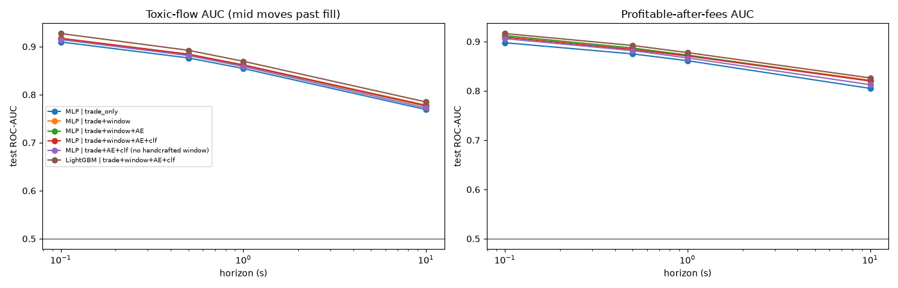
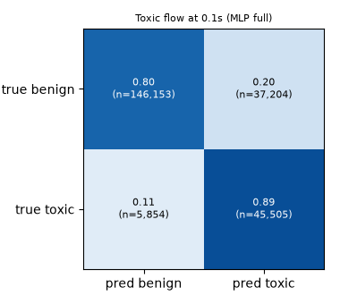
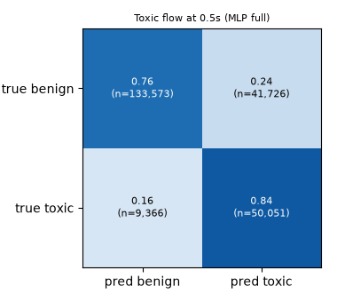
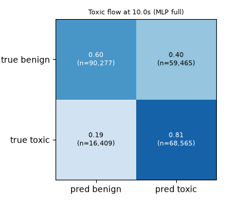
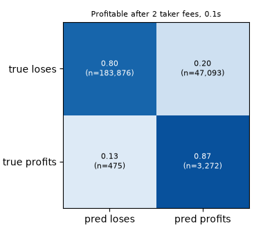
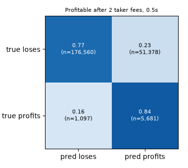
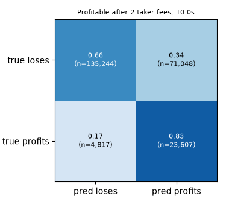
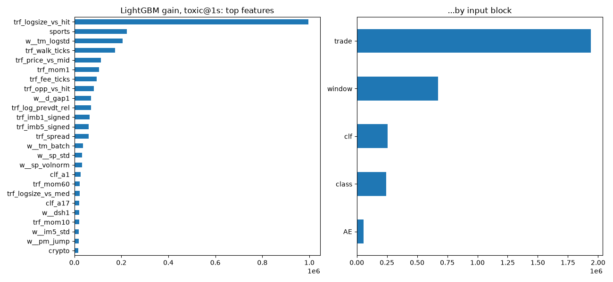
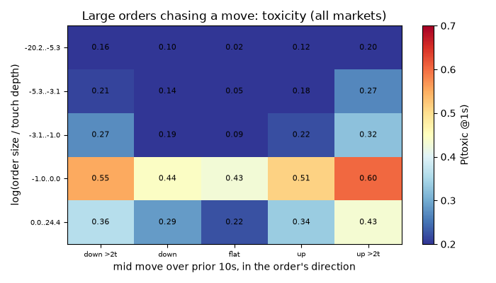

Toxic vs retail flow
Given the book state and the incoming taker order, predict whether the order is informed (the price runs past the fill) and whether the taker's round trip clears fees.
What we found
- Yes: the book state plus the incoming order predicts whether that order is toxic. On 235k held-out taker orders from unseen markets, ROC-AUC for “the mid ends past the fill price” is 0.93 / 0.89 / 0.87 / 0.79 at 0.1 / 0.5 / 1 / 10 s (LightGBM; the multi-task MLP is 0.92 / 0.88 / 0.86 / 0.78). The confusion matrices at a validation-chosen threshold give balanced accuracy 0.84 / 0.80 / 0.78 / 0.71. For example at 1 s, 82% of toxic orders are flagged while 74% of benign ones are correctly passed.
- It is not just the market family's base rate. AUC within one family at 1 s: sports 0.92 (base rate 14%), crypto binaries 0.82 (31%), perps 0.77 (47%). Per market at 1 s: tennis 0.95, NFL 0.93, MLB 0.92, hourly crypto 0.87, BTC 15m 0.77, alt 15m 0.76, BTC perp 0.68, ETH perp 0.56. Sports flow is the easiest to classify; BTC and ETH perps are the hardest.
- The order itself carries most of the signal. Order-only features already give 0.91 / 0.88 / 0.85 / 0.77. Adding the window microstructure features adds about 0.01 AUC at every horizon. The autoencoder embedding and the classifier activations add nothing on top (0.917 vs 0.918). Used instead of the handcrafted window they recover almost all of its value (0.915), so they encode the same information. Top features: order size relative to depth at the touch (by far), market family, inter-arrival irregularity, how far the order walked the book, price paid vs mid, prior 1 s move, fee.
- What a toxic order looks like. The classic pattern shows up clearly. Orders sized to exactly clear the touch (size ≈ displayed depth) are 43–60% toxic depending on the prior move, against 2–20% for small orders. Within every size bucket, toxicity rises when the order chases a prior 10 s move of more than 2 ticks in its own direction (e.g. 60% vs 43% for touch-clearing orders). So a large order after a move is usually informed, which matches the hypothesis. Part of the short-horizon effect is mechanical (clearing the touch moves the mid), so the 1 s and 10 s numbers are the honest measure of information.
- Profitable after two taker fees: predictable, but still not profitable. AUC for “round trip clears fees + exit spread” is 0.91 / 0.88 / 0.87 / 0.82. The base rate is tiny (1.6% at 0.1 s, 12% at 10 s). In the model's top 1% the hit rate rises to 29% / 35% / 38% / 61%, but the average net PnL of those trades is still negative (−5.5 / −2.7 / −2.6 / −0.7 ticks). Following the flow as a taker does not pay; this information is more useful for avoiding toxic flow as a maker (quote widening / skew) than for taking.
- Markout regression (in spread units): R² 0.57 / 0.45 / 0.38 / 0.13, mostly from the predictable half-spread-plus-impact component.
How predictable is a taker order?
| model / inputs | toxic AUC 0.1s | toxic AUC 0.5s | toxic AUC 1.0s | toxic AUC 10.0s | net>0 AUC 0.1s | net>0 AUC 0.5s | net>0 AUC 1.0s | net>0 AUC 10.0s |
|---|---|---|---|---|---|---|---|---|
| MLP | trade_only | 0.910 | 0.877 | 0.854 | 0.769 | 0.898 | 0.875 | 0.861 | 0.805 |
| MLP | trade+window | 0.918 | 0.884 | 0.862 | 0.778 | 0.912 | 0.887 | 0.872 | 0.822 |
| MLP | trade+window+AE | 0.917 | 0.884 | 0.861 | 0.777 | 0.912 | 0.887 | 0.873 | 0.820 |
| MLP | trade+window+AE+clf | 0.917 | 0.884 | 0.862 | 0.777 | 0.909 | 0.884 | 0.871 | 0.820 |
| MLP | trade+AE+clf (no handcrafted window) | 0.915 | 0.881 | 0.859 | 0.773 | 0.906 | 0.882 | 0.867 | 0.813 |
| LightGBM | trade+window+AE+clf | 0.927 | 0.892 | 0.870 | 0.785 | 0.916 | 0.892 | 0.878 | 0.826 |

Confusion matrices






Does it pay to follow the model?
| horizon | P(net>0) all | P(net>0) top 10% | P(net>0) top 1% | mean net (ticks) all | top 10% | top 1% |
|---|---|---|---|---|---|---|
| 0.1s | 0.016 | 0.111 | 0.290 | -11.238 | -10.815 | -5.519 |
| 0.5s | 0.029 | 0.170 | 0.346 | -10.675 | -7.995 | -2.725 |
| 1.0s | 0.038 | 0.202 | 0.376 | -10.486 | -6.730 | -2.648 |
| 10.0s | 0.121 | 0.405 | 0.613 | -9.996 | -3.297 | -0.732 |
By market family
| family | n | tox 0p1 | tox 0p5 | tox 1p0 | tox 10p0 | base 0p1 | base 0p5 | base 1p0 | base 10p0 |
|---|---|---|---|---|---|---|---|---|---|
| crypto | 114,626 | 0.904 | 0.850 | 0.815 | 0.712 | 0.211 | 0.269 | 0.309 | 0.425 |
| perp | 39,407 | 0.824 | 0.797 | 0.772 | 0.646 | 0.463 | 0.462 | 0.466 | 0.480 |
| sports | 80,683 | 0.942 | 0.929 | 0.920 | 0.860 | 0.111 | 0.128 | 0.141 | 0.214 |
| market | n | tox 0p1 | tox 0p5 | tox 1p0 | tox 10p0 |
|---|---|---|---|---|---|
| BTC15M | 28,332 | 0.912 | 0.820 | 0.770 | 0.645 |
| BTCPERP | 12,000 | 0.749 | 0.706 | 0.675 | 0.549 |
| ETHPERP | 4,000 | 0.618 | 0.580 | 0.559 | 0.532 |
| MLB | 14,893 | 0.939 | 0.929 | 0.921 | 0.866 |
| NCAAF | 10,785 | 0.910 | 0.891 | 0.877 | 0.818 |
| NFL | 14,727 | 0.949 | 0.937 | 0.927 | 0.900 |
| SOCCER | 15,262 | 0.926 | 0.909 | 0.896 | 0.826 |
| TENNIS | 15,196 | 0.964 | 0.957 | 0.951 | 0.859 |
| WNBA | 9,820 | 0.920 | 0.906 | 0.902 | 0.864 |
| alt15M | 30,604 | 0.871 | 0.801 | 0.760 | 0.658 |
| altPERP | 23,407 | 0.874 | 0.856 | 0.833 | 0.697 |
| cryptoHourly | 31,691 | 0.919 | 0.891 | 0.865 | 0.760 |
| cryptoRange | 23,999 | 0.874 | 0.854 | 0.837 | 0.764 |
What makes an order toxic


Method
A taker order is all fills with the same exchange millisecond and side. Features are taken from the book before the order's own deltas arrive (the exchange sends the depletion before the trade message). Order features: size relative to depth at the touch and to the recent median order, levels walked, time since the previous order relative to its recent median, run of same-side orders, prior 1/10/60 s move in the order's direction, signed imbalance, spread, distance to the 0/1 bound, fee in ticks. Labels at 0.1, 0.5, 1 and 10 s: toxic = the mid ends past the fill price in the taker's direction (the maker lost even after the spread); net>0 = buy at the fill, sell at the touch at t+h, pay two taker fees (Kalshi 0.07·P·(1−P) per contract per side; perps assumed 2 bp per side, which is an assumption to check). Inputs are compared in five sets, from order-only up to order + window features + AE embedding + classifier activations. One multi-task MLP predicts all 12 targets at once.